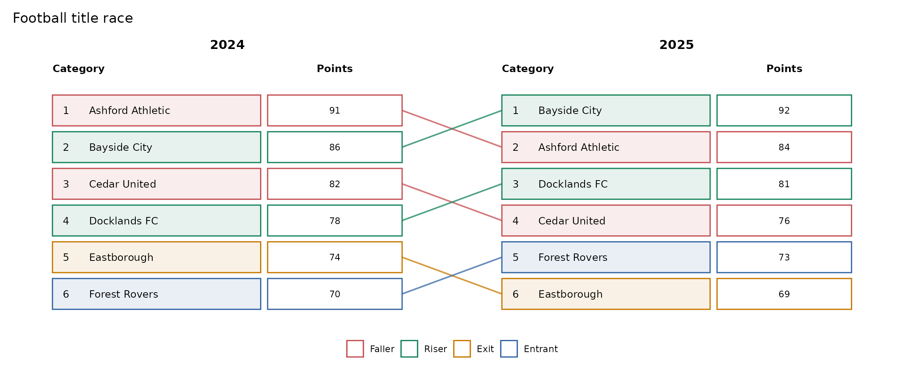
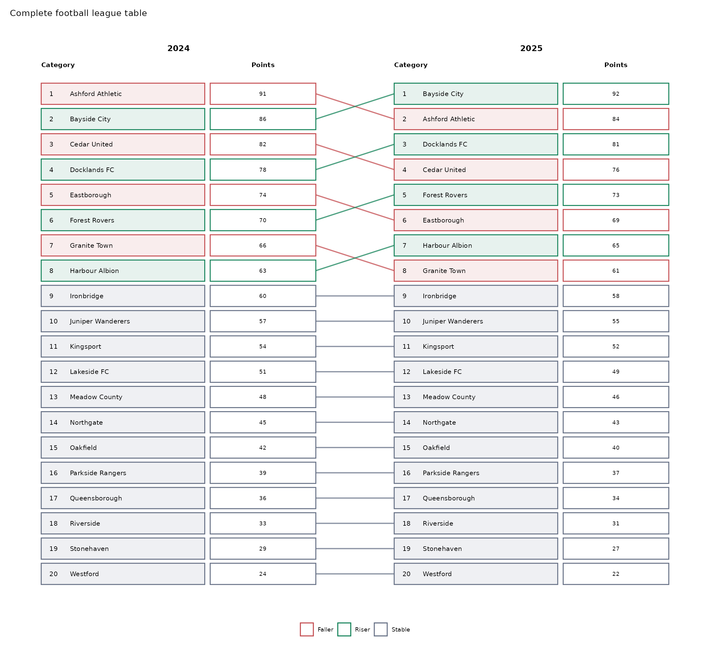
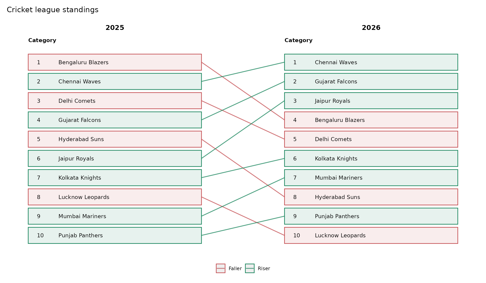

Sports leaderboards and larger rankings
Source:vignettes/sports-leaderboards.Rmd
sports-leaderboards.RmdRankings are not limited to health data. ggrank can show
football tables, cricket standings, gaming ladders, university rankings,
sales leaderboards, and other ordered lists.
All names and results in this article are synthetic teaching data. They are not official English Premier League, UEFA Champions League, Indian Premier League, or other competition results, and the package is not affiliated with those organisations.
What does top_n mean?
top_n is the highest rank included in the main display
boundary:
-
top_n = 5focuses on the top five; -
top_n = 10focuses on the top ten; -
top_n = 20can display a complete twenty-club league; -
top_n = 30can display thirty ranks.
It is deliberately a rank threshold rather than an exact row count. With competition ranking, everyone tied at the boundary is retained. A top-10 figure can therefore contain eleven or more rows.
A twenty-club football table
This Premier League-style example supplies points and lets
ggrank() calculate the ranks separately within each
season.
library(ggrank)
football <- data.frame(
season = rep(c("2024", "2025"), each = 20),
club = rep(c(
"Ashford Athletic", "Bayside City", "Cedar United", "Docklands FC",
"Eastborough", "Forest Rovers", "Granite Town", "Harbour Albion",
"Ironbridge", "Juniper Wanderers", "Kingsport", "Lakeside FC",
"Meadow County", "Northgate", "Oakfield", "Parkside Rangers",
"Queensborough", "Riverside", "Stonehaven", "Westford"
), 2),
points = c(
91, 86, 82, 78, 74, 70, 66, 63, 60, 57,
54, 51, 48, 45, 42, 39, 36, 33, 29, 24,
84, 92, 76, 81, 69, 73, 61, 65, 58, 55,
52, 49, 46, 43, 40, 37, 34, 31, 27, 22
)
)A top-five view is compact and focuses on title contenders:
ggrank(
football, club, season, points,
top_n = 5,
value_header = "Points",
title = "Football title race"
)
Use top_n = 20 for the complete league table:
football_plot <- ggrank(
football, club, season, points,
top_n = 20,
value_header = "Points",
label_wrap = 20,
base_size = 9,
title = "Complete football league table"
)
football_plot
A ten-team cricket-style leaderboard
When official ranks already exist, points or net run rate are optional. This IPL-style teaching example therefore uses names and ranks only.
cricket <- data.frame(
season = rep(c("2025", "2026"), each = 10),
team = rep(c(
"Bengaluru Blazers", "Chennai Waves", "Delhi Comets", "Gujarat Falcons",
"Hyderabad Suns", "Jaipur Royals", "Kolkata Knights", "Lucknow Leopards",
"Mumbai Mariners", "Punjab Panthers"
), 2),
rank = c(1, 2, 3, 4, 5, 6, 7, 8, 9, 10,
4, 1, 5, 2, 8, 3, 6, 10, 7, 9)
)
ggrank(
cricket, team, season,
rank = rank,
top_n = 10,
label_wrap = 20,
title = "Cricket league standings"
)
The rank-only layout omits the value column automatically.
Choosing an export height
The package does not impose a hard row limit, but a fixed-size page does. These are practical starting points for a two-period chart:
| Displayed rows | Suggested height | Typical use |
|---|---|---|
| 5 | 5–7 inches | slide or compact report |
| 10 | 7–9 inches | presentation or landscape page |
| 20 | 10–12 inches | full league table or tall page |
| 30 | 14–16 inches | poster, scrolling report, or large-format export |
ggplot2::ggsave(
"football-table.png", football_plot,
width = 14, height = 11, units = "in", dpi = 300
)Long names, wrapped labels, four periods, and larger text require additional height or width. For a normal presentation slide, showing the top five or top ten is usually clearer than squeezing thirty rows into one panel. A complete top-30 figure is better suited to a tall image, poster, webpage, or appendix.